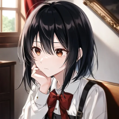

TSD Network Character Template 1.2 (https://www.thesupremedirector.xyz). Use or distribution of this template or modified versions of this template without this line of attribution is strictly prohibited.
Full Name: 席裏ユウ (Yuu Sekiura)
Nicknames: Yuuchama
Age: 10 Era / Year of Origin: Present Era
Species: Human
Gender: Female Pronouns: She/Her/Hers Sexuality: Straight
Voice Sample: -
Battle Theme: -
Personality: Innocent, loving and affectionate, responsible, independent
Likes: Reading, music, art, baking with 天頂ミナミ, attention, cuddling
Dislikes: Horror media, broccoli, particularly loud places
Skills and Talents: [Mostly] able to take care of self
Fears: Losing the ones who care about her
Personal Goals / Motivations: Seeks basic attention, care, and affection
Affiliation / Occupation: Elementary school student. First cousin, once removed of 天頂ミナミ. Adopted first cousin, once removed of 天頂マシュウ (The Supreme Director).
Titles Held: None
Special Abilities: None
Strengths: More independent than most children
Weaknesses: Timid, careful
Lore / Associated Backstory: Yuu is a child faced with a problem: busy, neglectful parents. Her parents are never around often enough to take care of her, leaving her to fend for herself and develop her own form of independence. Due to crippling lonliness, she often visits her cousins once removed 天頂マシュウ (The Supreme Director) and 天頂ミナミ. One Christmas, マシュウ was touched by Yuu's gift to him: a bowl hand-made from clay. He then came across the fact that Yuu didn't have anyone to take care of her, and decided to invite Yuu to come visit ミナミ's apartment whenever she needed to. Yuu became emotionally attached to マシュウ and can often be seen sitting on his lap, clinging to him and burying her face into him.
Inventory:
Eye Color: Light Brown
Height: 4'10" (147 cm)
Weight: 85 Pounds (38.5 Kg)
Photo:
